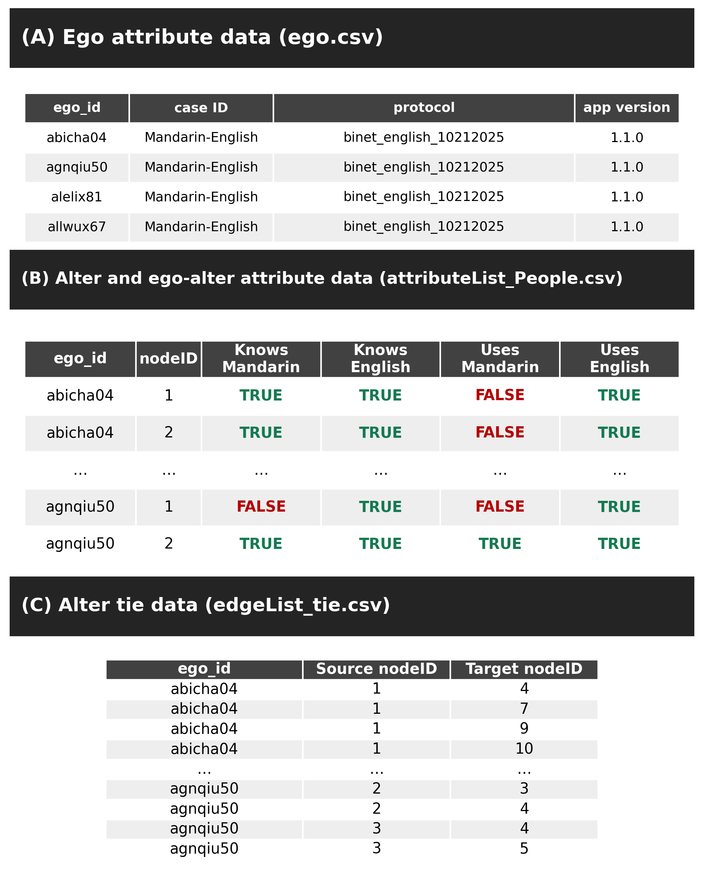
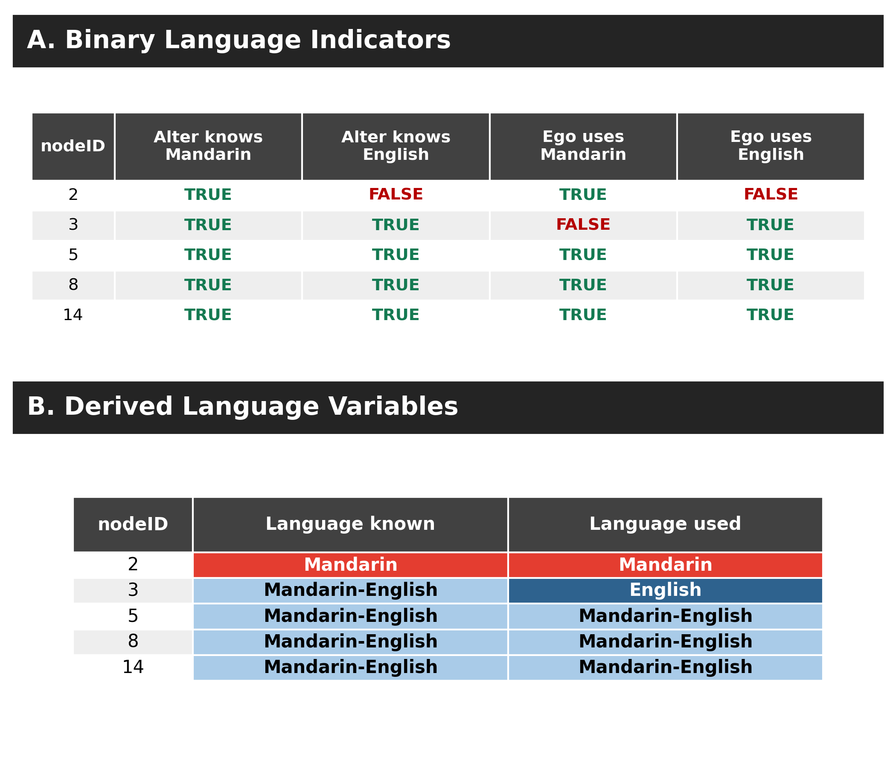
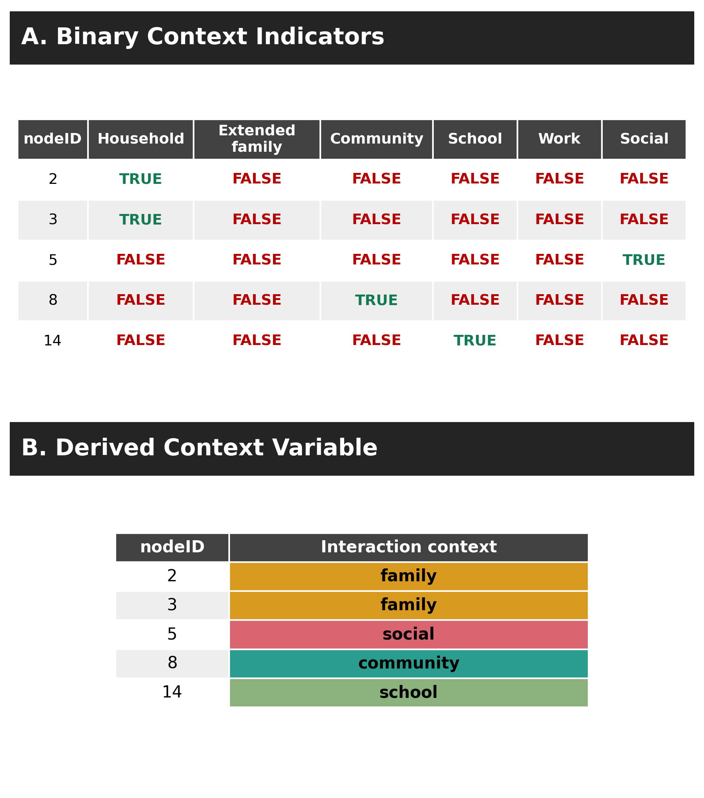
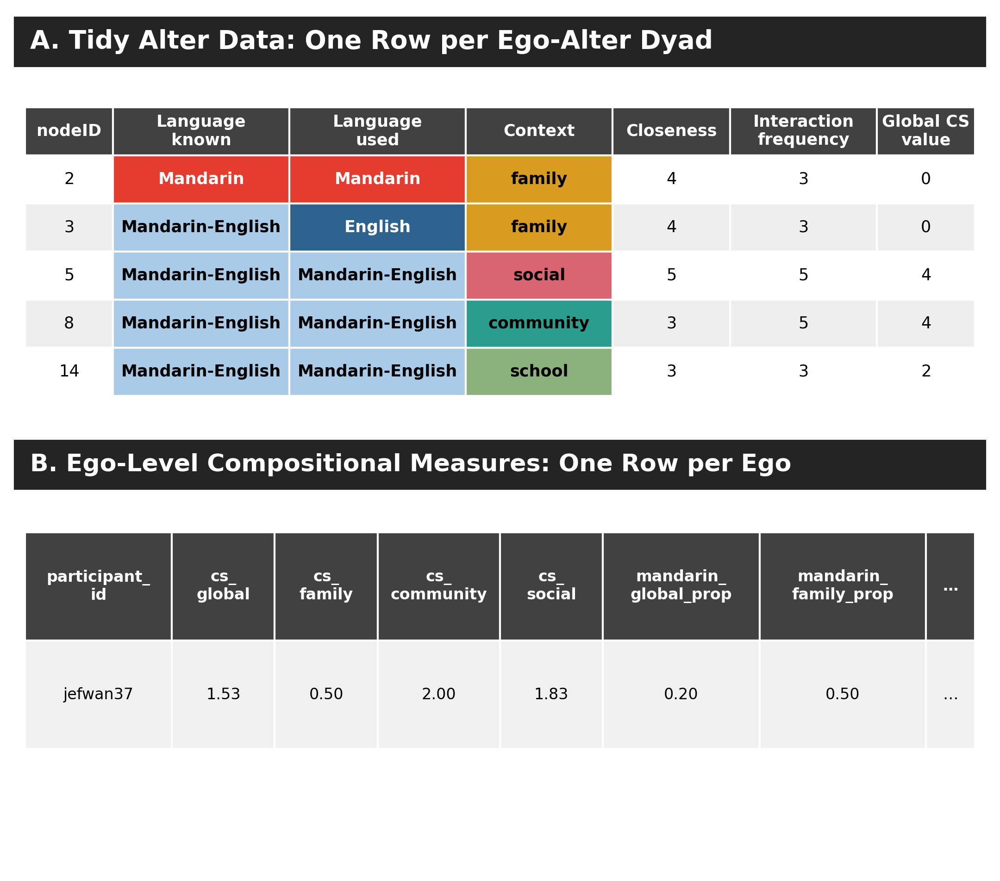

This tutorial reproduces the Mandarin–English real-data walkthrough used in the BiNet manuscript. One deidentified respondent, jefwan37, is followed from separate Network Canvas and Language History Questionnaire (LHQ) inputs through file linking, binary-indicator recoding, tidy ego–alter data, and ego-level compositional measures. The same records are used in every runnable example, table, and figure.
The respondent nominated 15 alters and 21 alter–alter ties. In reported interaction, 3 dyads were Mandarin-only, 5 were English-only, and 7 were Mandarin–English. Mandarin is the respondent’s L1 and English is the respondent’s L2.
data/jefwan37_raw_flags.csv: deidentified binary indicators and dyad ratings.data/jefwan37_raw_edges.csv: deidentified alter–alter pairs before the visualization export is written.data/jefwan37_lhq.csv: deidentified LHQ language profile used in the merge example.data/jefwan37_tidy_alter.csv: one row per ego–alter dyad after recoding.data/jefwan37_alter_edges.csv: two-column alter–alter edge list written for visualization.data/jefwan37_ego_compositional_wide.csv: one-row ego-level output.code/reproduce_jefwan37_measures.R: standalone reproduction and validation script.excel/BiNet_jefwan37_real_data_walkthrough.xlsx: inspectable workbook with source, tidy, output, and quality-check sheets.Run the complete analysis from the repository root:
Rscript BiNet_preprocessing_compositional_Measures/code/reproduce_jefwan37_measures.RBiNet data have linked ego, alter, and alter–alter tie levels. LHQ variables are collected outside Network Canvas and then joined at the ego level.
| Source | Unit of observation | Link variables |
|---|---|---|
*_ego.csv |
One row per participant | ego_id, networkCanvasEgoUUID |
*_attributeList_People.csv |
One row per nominated alter | networkCanvasEgoUUID, networkCanvasUUID, nodeID |
*_edgeList_tie.csv |
One row per alter–alter tie | networkCanvasEgoUUID, source and target alter identifiers |
| LHQ file | One row per participant | Study participant ID matching ego_id |
In a full Network Canvas export, networkCanvasEgoUUID links all files belonging to one ego, and alter UUIDs identify the endpoints of each alter–alter tie. The LHQ participant ID must be standardized to the same type and name as ego_id before joining. In the published jefwan37 walkthrough, direct system identifiers are replaced by participant_id and deidentified alter labels A01–A15.
Network Canvas exports one set of three CSV files per participant. Keep all participants’ files in one folder. The retained import pattern below reads each level and stacks files across participants. It is a template for a study’s unredacted export directory, so it is not executed against this public repository.
library(dplyr)
library(readr)
data_dir <- "./Network Canvas Export"
data_alter <- data_dir |>
list.files(full.names = TRUE, pattern = "attributeList_People\\.csv$") |>
lapply(readr::read_csv, show_col_types = FALSE) |>
dplyr::bind_rows()
data_ego <- data_dir |>
list.files(full.names = TRUE, pattern = "_ego\\.csv$") |>
lapply(readr::read_csv, show_col_types = FALSE) |>
dplyr::bind_rows()
data_edgelist <- data_dir |>
list.files(full.names = TRUE, pattern = "edgeList_tie\\.csv$") |>
lapply(readr::read_csv, show_col_types = FALSE) |>
dplyr::bind_rows()
cat(
"Loaded", nrow(data_ego), "egos,",
nrow(data_alter), "alters, and",
nrow(data_edgelist), "alter-alter ties.\n"
)Column names vary when a protocol changes. Audit the link fields before any join. This reusable check catches a missing identifier without requiring every study to use an identical set of language or demographic columns.
check_columns <- function(data, required, label) {
missing <- setdiff(required, names(data))
if (length(missing)) {
stop(label, " is missing: ", paste(missing, collapse = ", "))
}
message(label, ": ", nrow(data), " rows; required columns present")
invisible(data)
}
check_columns(
data_ego,
c("ego_id", "networkCanvasEgoUUID"),
"Ego export"
)
check_columns(
data_alter,
c("networkCanvasEgoUUID", "networkCanvasUUID", "nodeID"),
"Alter export"
)
check_columns(
data_edgelist,
c("networkCanvasEgoUUID", "networkCanvasSourceUUID", "networkCanvasTargetUUID"),
"Tie export"
)Read the LHQ separately and join its ego-level variables to the Network Canvas ego file. Following Monica’s preprocessing pipeline, both files already contain ego_id, so no rename is needed. If a study’s LHQ uses another ID column, rename that actual column to ego_id before this block. semi_join() then restricts alter and tie records to egos retained in the linked ego table.
lhq_df <- readr::read_csv("data/lhq.csv", show_col_types = FALSE) |>
dplyr::mutate(ego_id = as.character(ego_id))
egoData_linked <- data_ego |>
dplyr::select(networkCanvasEgoUUID, ego_id, sessionStart, sessionFinish) |>
dplyr::mutate(ego_id = as.character(ego_id)) |>
dplyr::left_join(lhq_df, by = "ego_id")
alterData_linked <- data_alter |>
dplyr::semi_join(
egoData_linked |> dplyr::select(networkCanvasEgoUUID),
by = "networkCanvasEgoUUID"
)
edgelist_linked <- data_edgelist |>
dplyr::semi_join(
egoData_linked |> dplyr::select(networkCanvasEgoUUID),
by = "networkCanvasEgoUUID"
)Use left_join() for the LHQ merge so every Network Canvas ego remains visible even if its questionnaire row is missing. Check the result immediately rather than allowing an unmatched LHQ record to become an unnoticed block of missing variables.
stopifnot(
nrow(egoData_linked) == dplyr::n_distinct(egoData_linked$networkCanvasEgoUUID),
all(alterData_linked$networkCanvasEgoUUID %in% egoData_linked$networkCanvasEgoUUID),
all(edgelist_linked$networkCanvasEgoUUID %in% egoData_linked$networkCanvasEgoUUID)
)
unmatched_lhq <- egoData_linked |>
dplyr::filter(is.na(ego_l1) | is.na(ego_l2)) |>
dplyr::select(ego_id)
if (nrow(unmatched_lhq)) {
warning("Some Network Canvas egos did not match an LHQ row.")
}jefwan37The public walkthrough uses flattened, deidentified files instead of publishing raw Network Canvas UUIDs. The linking logic is unchanged: participant_id connects the LHQ and alter tables, while alter_label connects the alter and edge tables.
library(dplyr)
library(readr)
lhq_df <- read_csv("data/jefwan37_lhq.csv", show_col_types = FALSE)
data_alter <- read_csv("data/jefwan37_raw_flags.csv", show_col_types = FALSE)
data_edgelist <- read_csv("data/jefwan37_raw_edges.csv", show_col_types = FALSE)
data_ego <- data_alter |>
distinct(participant_id)
egoData_linked <- data_ego |>
left_join(lhq_df, by = "participant_id")
alterData_linked <- data_alter |>
semi_join(egoData_linked, by = "participant_id")
edgelist_linked <- data_edgelist |>
semi_join(egoData_linked, by = "participant_id")
stopifnot(
nrow(egoData_linked) == 1,
nrow(alterData_linked) == 15,
nrow(edgelist_linked) == 21,
!anyDuplicated(alterData_linked$alter_label),
all(c(edgelist_linked$source, edgelist_linked$target) %in%
alterData_linked$alter_label),
!anyNA(egoData_linked[c("ego_l1", "ego_l2")])
)The checks confirm a one-row LHQ merge, 15 linked alters, 21 linked ties, unique alter labels, and valid edge endpoints. They establish the denominator before aggregation and catch ID problems before measures are calculated.

Network Canvas exports one Boolean column for each language. Two paired indicators become one categorical variable:
| Mandarin | English | Derived category |
|---|---|---|
TRUE |
FALSE |
Mandarin |
FALSE |
TRUE |
English |
TRUE |
TRUE |
Mandarin-English |
FALSE |
FALSE |
Other or missing, depending on the protocol |
alter <- alterData_linked |>
mutate(
languageKnownCategory = case_when(
alter_knows_Mandarin & alter_knows_English ~ "Mandarin-English",
alter_knows_Mandarin ~ "Mandarin",
alter_knows_English ~ "English",
TRUE ~ "Other"
),
languageUsedCategory = case_when(
ego_uses_Mandarin & ego_uses_English ~ "Mandarin-English",
ego_uses_Mandarin ~ "Mandarin",
ego_uses_English ~ "English",
TRUE ~ "Other"
)
)languageKnownCategory describes the alter’s repertoire. languageUsedCategory describes the language(s) the ego reports using with that alter. They answer different questions and should not be substituted for one another.

The protocol stores contexts in separate indicator columns. Household and extended family are combined into family; the other occupied contexts remain community, school, work, and social.
alter <- alter |>
mutate(
interaction_context = case_when(
household | extended_family ~ "family",
community ~ "community",
school ~ "school",
work ~ "work",
social ~ "social",
TRUE ~ NA_character_
)
)
context_flags <- c("household", "extended_family", "community", "school", "work", "social")
stopifnot(all(rowSums(as.data.frame(alter[context_flags])) == 1))The mutually exclusive check prevents one dyad from silently entering more than one context summary. In this network, family has 4 alters, community 4, social 6, school 1, and work 0.

The analysis table keeps one row per ego–alter dyad. It contains stable identifiers, the two derived language variables, one context variable, continuous dyad ratings, and the language flags needed for L1/L2 homophily.
tidy_alter <- alter |>
select(
participant_id, alter_label, nodeID,
languageKnownCategory, languageUsedCategory, interaction_context,
emotional_closeness, interaction_frequency, codeswitching_frequency,
alter_knows_Mandarin, alter_knows_English,
ego_uses_Mandarin, ego_uses_English
)
alter_edges <- edgelist_linked |>
select(source, target)
write_csv(tidy_alter, "data/jefwan37_tidy_alter.csv")
write_csv(alter_edges, "data/jefwan37_alter_edges.csv")These two files are the visualization inputs. jefwan37_tidy_alter.csv supplies node attributes such as language, context, and emotional closeness; jefwan37_alter_edges.csv supplies the 21 alter–alter ties. The visualization does not load jefwan37_ego_compositional_wide.csv, because that one-row file contains summary measures rather than node or edge records.
The questionnaire asks for code-switching frequency only when more than one interaction language is selected. For the manuscript analysis, a Mandarin-only or English-only dyad contributes a genuine 0; a Mandarin–English dyad retains its reported 1–4 rating. This rule keeps all 15 nominated alters in the network-wide denominator.
alter <- alter |>
mutate(
cs_zero_coded = case_when(
languageUsedCategory %in% c("Mandarin", "English") ~ 0,
languageUsedCategory == "Mandarin-English" ~ codeswitching_frequency,
TRUE ~ NA_real_
)
)Do not use mean(codeswitching_frequency, na.rm = TRUE) for this analysis: that would average only the 7 bilingual dyads and would answer a different question.
mean_or_na <- function(x) {
observed <- x[!is.na(x)]
if (length(observed) == 0L) NA_real_ else mean(observed)
}
context_mean <- function(values, contexts, target) {
mean_or_na(values[contexts == target])
}
cs_measures <- alter |>
group_by(participant_id) |>
summarise(
cs_global = mean_or_na(cs_zero_coded),
cs_family = context_mean(cs_zero_coded, interaction_context, "family"),
cs_community = context_mean(cs_zero_coded, interaction_context, "community"),
cs_social = context_mean(cs_zero_coded, interaction_context, "social"),
cs_school = context_mean(cs_zero_coded, interaction_context, "school"),
.groups = "drop"
)For jefwan37, cs_global = 1.53. Context means are 0.50 for family, 2.00 for community, 1.83 for social, and 2.00 for school. A context with no alters has no denominator and is NA, not zero.
Count-based composition measures are named as proportions. Here an alter contributes 1 only when the dyad’s reported interaction is Mandarin-only; Mandarin–English dyads are not counted as Mandarin-only.
context_prop <- function(flags, contexts, target) {
mean_or_na(flags[contexts == target])
}
mandarin_measures <- alter |>
group_by(participant_id) |>
summarise(
mandarin_global_prop = mean_or_na(languageUsedCategory == "Mandarin"),
mandarin_family_prop = context_prop(languageUsedCategory == "Mandarin", interaction_context, "family"),
mandarin_community_prop = context_prop(languageUsedCategory == "Mandarin", interaction_context, "community"),
mandarin_social_prop = context_prop(languageUsedCategory == "Mandarin", interaction_context, "social"),
.groups = "drop"
)If a respondent has alters in a context but none meet the criterion, the proportion is 0. Only a context with no alters is NA.
Language homophily must be mapped to each ego’s language profile rather than tied permanently to Mandarin or English. For this respondent, L1 is Mandarin and L2 is English. A bilingual dyad contributes to both L1 and L2 homophily.
ego_profile <- egoData_linked |>
select(participant_id, ego_l1, ego_l2)
alter_profiled <- alter |>
left_join(ego_profile, by = "participant_id") |>
mutate(
l1_match = case_when(
ego_l1 == "Mandarin" ~ ego_uses_Mandarin,
ego_l1 == "English" ~ ego_uses_English,
TRUE ~ NA
),
l2_match = case_when(
ego_l2 == "Mandarin" ~ ego_uses_Mandarin,
ego_l2 == "English" ~ ego_uses_English,
TRUE ~ NA
)
)
homophily <- alter_profiled |>
group_by(participant_id, ego_l1, ego_l2) |>
summarise(
prop_l1_homophily = mean_or_na(l1_match),
prop_l2_homophily = mean_or_na(l2_match),
.groups = "drop"
)Ten of 15 alters are used with Mandarin, so prop_l1_homophily = 0.67. Twelve of 15 are used with English, so prop_l2_homophily = 0.80.
ego_compositional <- cs_measures |>
left_join(mandarin_measures, by = "participant_id") |>
left_join(homophily, by = "participant_id")
write_csv(ego_compositional, "data/jefwan37_ego_compositional_wide.csv")
ego_compositional
| Measure | Expected value |
|---|---|
cs_global |
1.53 |
cs_family |
0.50 |
cs_community |
2.00 |
cs_social |
1.83 |
cs_school |
2.00 |
mandarin_global_prop |
0.20 |
mandarin_family_prop |
0.50 |
mandarin_community_prop |
0.00 |
mandarin_social_prop |
0.17 |
prop_l1_homophily |
0.67 |
prop_l2_homophily |
0.80 |
The standalone script includes assertions for the network size, language composition, global CS mean, and both homophily values. The workbook provides the same source-to-output trail for readers who prefer to inspect the calculations without running R.
Continue with the network visualization tutorial, which uses these same 15 alters and 21 alter–alter ties to reproduce manuscript Figure 8A/B.